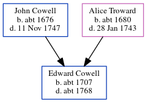

Edward Cowell c1707 - c1768
[ Home ] | [ Calendar ] | [ Surnames Index ] | [ Census Index ] | [ Family History ]The child of John Cowell (a yeoman) and Alice Troward, Edward Cowell, the six times great-uncle of Nigel Horne, was born in Margate, Kent, England c. 17071 and baptized there at St John the Baptist Church on Jul 14, 1707.
He died c. 1768 and was buried at St John the Baptist Church in Margate on Aug 5, 17682,3.
Parents
- John was born c. 1676
- Alice was born c. 1680
Citations
- Kent, Canterbury Archdeaconry Burials - Findmypast
- Kent, Canterbury Archdeaconry Burials - Findmypast
- Kent, Canterbury Archdeaconry Burials - Findmypast
Media
Canterbury Burials - GBPRS/CANT/D/95006676
Canterbury Burials - GBPRS/CANT/D/95160110
Family Tree
Generated by ged2site. Last updated on Jun 11, 2024